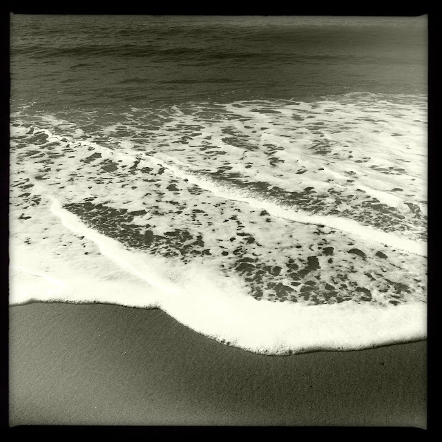

Recovered weblog entry
My my my
My my my it’s a beautiful world
I like swimming in the sea
I like to go out beyond the white breakers
Where a man can still be free (or a woman if you are one)
I like swimming in the sea.
Beautiful World, Colin Hay
